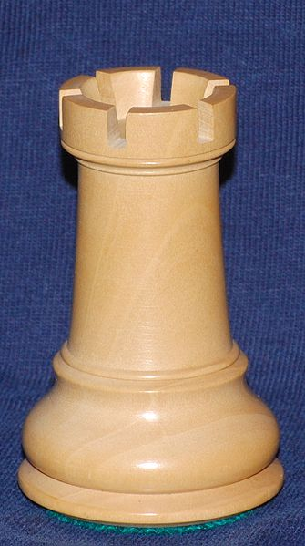

Problem A: Rooks

You have unexpectedly become the owner of a large chessboard,
having fifteen squares to each side. Because you do not know
how to play chess on such a large board, you find an
alternative way to make use of it.
In chess, a rook attacks all squares that are
in the same row or column of the chessboard as it is.
For the purposes of this problem, we define a rook as also
attacking the square on which it is already standing.
Given a set of chessboard squares, how many rooks are needed to attack
all of them?
Input Specification
Input consists of a number of test cases.
Each test case consists of fifteen lines each containing fifteen characters
depicting the chess board.
Each character is either a period (.) or a hash (#).
Every chessboard square depicted by a hash must be attacked by
a rook. After all the test cases, one more line of input appears.
This line contains the word END.
Sample Input
...............
...............
...............
...............
...............
...............
...............
.......#.......
...............
...............
...............
...............
...............
...............
...............
END
Output Specification
Output consists of exactly one line for each test case. The line contains
a single integer, the minimum number of rooks that must be placed
on the chess board so that every square marked with a hash is attacked.
Output for Sample Input
1
Malcolm Sharpe, Ondřej Lhoták